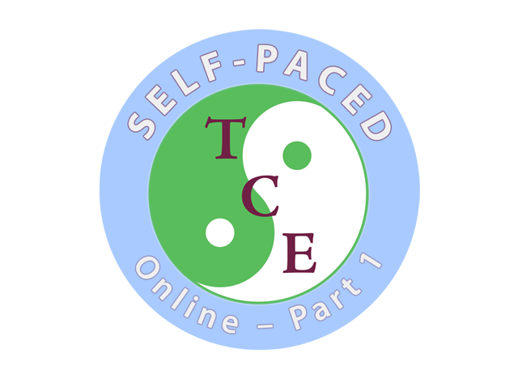

Professionals new to Adapted Tai Chi, or those refreshing previous in-person training.

SELF-PACED ONLINE
Adapted Tai Chi Exercises Online Self-Paced (Individual) Course – Part 1
This self-paced online course is designed for individual healthcare professionals who want to strengthen their skills in adapted Tai Chi and integrate mindful, evidence-based exercises into clinical practice. Complete the course at your own convenience without the constraints of scheduled group sessions.
Enrol Now – Secure Stripe CheckoutCourse preview
Part 1 Video Introduction
Course at a glance
A practical foundation for clinical Tai Chi exercise work
Part 1 gives you a calm, structured entry point into Adapted Tai Chi Exercises, with a focus on safe teaching, clinical reasoning, and exercises that can be adapted for individual or group rehabilitation settings.
Posture, alignment, balance, weight transfer, gait, and safe exercise adaptation.
Build confidence using simple adapted Tai Chi exercises with patients and clients.
What you will receive
- Engaging video lessons with expert instruction
- Insightful case discussions demonstrating real-world applications
- Downloadable course booklet with practical guidance
- Multiple-choice quizzes to reinforce learning
- Lifetime access to recorded lessons for review
- Monthly one-hour live Zoom seminars for optional interaction. Recorded for those unable to attend.
- Downloadable CPD Certificate of Completion
Course Curriculum
- Principles and foundations of Tai Chi
- Evidence-based benefits for health and rehabilitation
- Seated and standing exercises for posture, alignment, balance, weight transfer and gait
- Setting up and running individual or group sessions
- Adapting exercises for safe and effective use in a variety of clinical contexts
Flexible learning
Ideal for Busy Professionals
New to Adapted Tai Chi?
Add a valuable skill to your tool box
Previously attended in-person training?
Refresh your knowledge
Explored other Tai Chi courses?
Experience a unique, clinically focused approach
Struggle to fit scheduled tutor-led courses into your working day?
Learn at your own convenience, wherever and whenever suits you
Designed for
Physiotherapists, Occupational Therapists, Nurses
Exercise Professionals, Clinical Psychologists
Assistants, Support Workers, Technical Instructors, Students
Complementary Therapists
Tai Chi and Qigong Instructors
Embrace the ancient wisdom of Tai Chi and unlock new possibilities for your clients' rehabilitation journeys. Enrol now and experience the transformative power of mindful movement – at your own pace
Course feedback
Testimonials
“I wanted to say thank you for such a good course. I really enjoyed working through it and will spend time practicing and reviewing it again. It has given me such a lot to think about with my practice and was lovely breath of fresh air…. I have been catching up with the evening webinars from the recordings – I love hearing how people are using it with their patient groups. I found the recent mental health one very moving where she told the story of the man with ADHD and his response to the class…and appreciate the recordings greatly”.
“I attended Part 1 of Ros Smith’s Tai Chi Course a few years ago. It was excellent. I gained a deeper understanding of the benefits of Tai Chi and we were gently introduced into some of the Tai Chi moves which I now incorporate into my Cardiac Rehabilitation classes. Patients love it and many go on to participate in classes in their local community which will provide ongoing benefits for their health. I recommend this course for anyone wanting to learn more about Tai Chi.”
“This is a really accessible course with simple, safe tai chi exercises that you can use with your patients. Ros has a great teaching style and demonstrates the adapted forms broken down into segments with useful tips on how to teach effectively, The course is set up so that you can easily stop the recording if you need to and find your place to catch up at a later date. Another great feature is the monthly catch up on Zoom where Ros is able to help with specific practice of her adapted tai chi forms.”
” I really enjoyed the self-paced course, Being able to dip in and out when it suits me is great. Very detailed explanations and demonstrations of the exercises. I have started using the exercises at the end of my balance classes. My clients love them. So relaxing.”